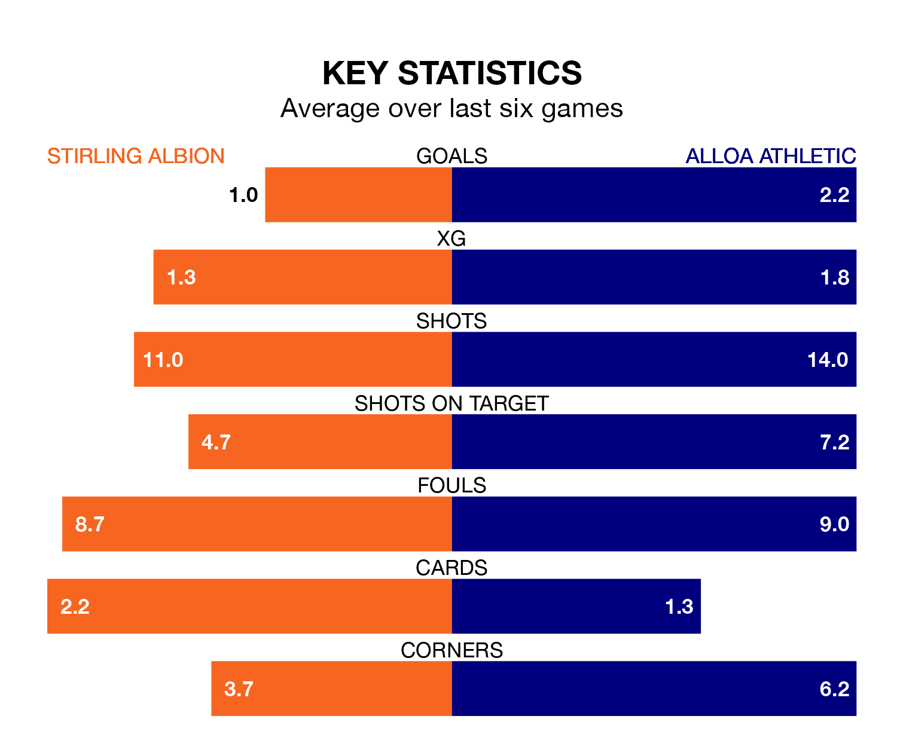

Relegation candidates Stirling Albion face a challenge against high-flying Alloa Athletic at the Forthbank Stadium on Saturday.
Stirling Albion are eighth in the League One table, and have picked up nine wins and seven draws in their 31 games to date.
Alloa, meanwhile, are third in the standings with 48 points, having won 14 and drawn six, and are 33 points behind table-toppers Falkirk.
In Blair Currie, Stirling can rely on one of the league's safest pair of hands. He has kept nine clean sheets in his 31 appearances this season, and no 'keeper has prevented the opposition scoring more often in League One.
In Alloa's net, Peter Morrison has five clean sheets in 25 games. He has conceded a goal every 59 minutes, only slightly more often than the 61 minutes between goals for Currie.
With 34 goals in 31 games so far this season, Albion are the league's joint-second-lowest scorers with 1.1 goals per game. And they are conceding at an average rate, letting in 50 goals at a rate of 1.6 per game.
Athletic, meanwhile, are average scorers, with 1.6 goals per game. They have also conceded 1.6 goals per game.
In the last 10 years, Stirling and Alloa have played each other on nine occasions. Stirling won two of them and Alloa seven.
On average, the Binos scored 0.8 goals and Alloa 1.8 in those matches.
Their last meeting was on February 10, when Alloa won 1-0 at home.
The Binos are in disappointing form in League One, with one win and two draws from their last six games.
With two wins and a draw over that period, the away side's form is slightly better – they have taken seven points from 18, compared to the hosts' five.
Stirling's last match was on Saturday, a 4-2 loss against Cove Rangers, with Cameron Clark and Kieran Offord getting the goals for the Binos.
Alloa drew 1-1 with Annan Athletic last time out, also on Saturday, with Bobby Wales on the scoresheet.
Updated: 10:31 (UTC), 31/03/24